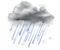
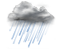

基于互联网的应用正变得越来越普及，在这个过程中，有更多的站点将自身的资源开放给开发者来调用。对外提供的API 调用使得站点之间的内容关联性更强，同时这些开放的平台也为用户、开发者和中小网站带来了更大的价值。 开放是目前的发展趋势，越来越多的产品走向开放。目前的网站不能靠限制用户离开来留住用户，开放的架构反而更增加了用户的粘性。在Web 2.0的浪潮到来之前，开放的API 甚至源代码主要体现在桌面应用上，而现在越来越多的Web应用面向开发者开放了API。
我的API密钥：
API密钥（key）是用来验证API请求合法性的一个唯一字符串，通过API请求中的key参数传入。
我的用户ID：
用户ID是在注册心知会员时系统自动分配的一个随机10位的字符串，如U123456789。用户ID会被使用在签名验证方式中。
心知天气支持全球24,373个城市和地点（城市列表下载）！下面的交互地图中的每个亮点就是其中一个。而这仅仅只是开始，我们会继续增加更多的地点点亮地球的每个城市每个角落。
使用签名验证方式是通过HMAC-SHA1对请求参数加密后得到的签名字串进行身份验证，避免了将API密钥（key）明文包含在请求中而造成泄露。签名的生成方式如下：
我们收到了不少用户反馈，希望能够在网页中直接调用心知天气API接口，而不需要通过服务器中转。因此我们在V3版中增加JSONP的支持。只要在请求中使用callback参数指定回调函数的名字并使用签名验证方式即可，并在网页中通过script的方式调用就可以了。例如：
<script type="text/javascript" src="https://api.thinkpage.cn/v3/weather/now.json?location=beijing&ts=1443079775&ttl=30&uid=[your_uid]&sig=[your_signature]&callback=showWeather"></<script>
返回结果：
showWeather({
"results": [{
"location": {
"id": "WX4FBXXFKE4F",
"name": "北京",
......
});
V3版API对于返回值的单位做了更加标准化的处理。unit参数除了会影响温度单位外，还会影响风速、能见度和气压的单位，具体说明如下：
当unit为c时
| 返回值 | 单位 |
|---|---|
| 温度 | c（摄氏度） |
| 风速 | km/h（千米每小时） |
| 能见度 | km（千米） |
| 气压 | mb（百帕） |
当unit为f时
| 返回值 | 单位 |
|---|---|
| 温度 | f（华氏度） |
| 风速 | mph（英里每小时） |
| 能见度 | mi（英里） |
| 气压 | in（英寸） |
每一种天气现象（例如：晴、小雨、多云等）都对应一个天气现象代码，即API返回结果中的code字段。下表列出了心知天气API所有可能返回的天气现象代码的对照关系。
天气现象图标下载
每一个天气现象代码也对应了一个相应的PNG图标。心知天气为会员提供原创设计的图标免费使用。下载地址：
| 代码 | 中文 | 英文 | 图标 |
|---|---|---|---|
| 0 | 晴 | Sunny |  |
| 1 | 晴 | Clear |  |
| 2 | 晴 | Fair |  |
| 3 | 晴 | Fair | |
| 4 | 多云 | Cloudy | |
| 5 | 晴间多云 | Partly Cloudy | |
| 6 | 晴间多云 | Partly Cloudy | |
| 7 | 大部多云 | Mostly Cloudy |  |
| 8 | 大部多云 | Mostly Cloudy | |
| 9 | 阴 | Overcast | |
| 10 | 阵雨 | Shower |  |
| 11 | 雷阵雨 | Thundershower |  |
| 12 | 雷阵雨伴有冰雹 | Thundershower with Hail |  |
| 13 | 小雨 | Light Rain |  |
| 14 | 中雨 | Moderate Rain | |
| 15 | 大雨 | Heavy Rain | |
| 16 | 暴雨 | Storm | |
| 17 | 大暴雨 | Heavy Storm | |
| 18 | 特大暴雨 | Severe Storm | |
| 19 | 冻雨 | Ice Rain | |
| 20 | 雨夹雪 | Sleet | |
| 21 | 阵雪 | Snow Flurry | |
| 22 | 小雪 | Light Snow | |
| 23 | 中雪 | Moderate Snow | |
| 24 | 大雪 | Heavy Snow | |
| 25 | 暴雪 | Snowstorm | |
| 26 | 浮尘 | Dust | |
| 27 | 扬沙 | Sand | |
| 28 | 沙尘暴 | Duststorm | |
| 29 | 强沙尘暴 | Sandstorm | |
| 30 | 雾 | Foggy | |
| 31 | 霾 | Haze | |
| 32 | 风 | Windy | |
| 33 | 大风 | Blustery | |
| 34 | 飓风 | Hurricane | |
| 35 | 热带风暴 | Tropical Storm | |
| 36 | 龙卷风 | Tornado | |
| 37 | 冷 | Cold | |
| 38 | 热 | Hot | |
| 99 | 未知 | Unknown |
获取指定城市的实况天气。
请求地址示例
参数
参数值范围：
城市ID 例如：location=WX4FBXXFKE4F城市中文名 例如：location=北京城市拼音/英文名 例如：location=beijing经纬度 例如：location=39.93:116.40 （注意纬度前经度在后，冒号分隔）IP地址 例如：location=220.181.111.86“ip”两个字母 自动识别请求IP地址，例如：location=ip参数值范围：
zh-Hans 简体中文zh-Hant 繁体中文en 英文ja 日语de 德语fr 法语默认值：zh-Hans
参数值范围：
c 当参数为c时，温度c、风速km/h、能见度km、气压mbf 当参数为f时，温度f、风速mph、能见度mile、气压inch默认值：c
返回结果 200
{
"results": [{
"location": {
"id": "C23NB62W20TF",
"name": "西雅图",
"country": "US",
"timezone": "America/Los_Angeles",
"timezone_offset": "-07:00"
},
"now": {
"text": "多云", //天气现象文字
"code": "4", //天气现象代码
"temperature": "14", //温度，单位为c摄氏度或f华氏度
"feels_like": "14", //体感温度，单位为c摄氏度或f华氏度
"pressure": "1018", //气压，单位为mb百帕或in英寸
"humidity": "76", //相对湿度，0~100，单位为百分比
"visibility": "16.09", //能见度，单位为km公里或mi英里
"wind_direction": "西北", //风向文字
"wind_direction_degree": "340", //风向角度，范围0~360，0为正北，90为正东，180为正南，270为正西
"wind_speed": "8.05", //风速，单位为km/h公里每小时或mph英里每小时
"wind_scale": "2", //风力等级，请参考：http://baike.baidu.com/view/465076.htm
"clouds": "90", //云量，范围0~100，天空被云覆盖的百分比
"dew_point": "-12" //露点温度，请参考：http://baike.baidu.com/view/118348.htm
},
"last_update": "2015-09-25T22:45:00-07:00" //数据更新时间（该城市的本地时间）
}]
}
获取指定城市未来最多15天的每日白天和夜间预报，以及昨天的历史数据。。
请求地址示例
参数
参数值范围：
城市ID 例如：location=WX4FBXXFKE4F城市中文名 例如：location=北京城市拼音/英文名 例如：location=beijing经纬度 例如：location=39.93:116.40 （注意纬度前经度在后，冒号分隔）IP地址 例如：location=220.181.111.86“ip”两个字母 自动识别请求IP地址，例如：location=ip参数值范围：
zh-Hans 简体中文zh-Hant 繁体中文en 英文ja 日语de 德语fr 法语默认值：zh-Hans
参数值范围：
c 当参数为c时，温度c、风速km/h、能见度km、气压mbf 当参数为f时，温度f、风速mph、能见度mile、气压inch默认值：c
参数值范围：
日期 例如：start=2015/10/1整数 例如：start=-2 代表前天、start=-1 代表昨天、start=0 代表今天、start=1 代表明天默认值：0
参数值范围：
整数 例如：days=3 代表3天、days=7 代表7天返回结果 200
{
"results": [{
"location": {
"id": "WX4FBXXFKE4F",
"name": "北京",
"country": "CN",
"path": "北京,北京,中国",
"timezone": "Asia/Shanghai",
"timezone_offset": "+08:00"
},
"daily": [{ //返回指定days天数的结果
"date": "2015-09-20", //日期
"text_day": "多云", //白天天气现象文字
"code_day": "4", //白天天气现象代码
"text_night": "晴", //晚间天气现象文字
"code_night": "0", //晚间天气现象代码
"high": "26", //当天最高温度
"low": "17", //当天最低温度
"precip": "0", //降水概率，范围0~100，单位百分比
"wind_direction": "", //风向文字
"wind_direction_degree": "255", //风向角度，范围0~360
"wind_speed": "9.66", //风速，单位km/h（当unit=c时）、mph（当unit=f时）
"wind_scale": "" //风力等级
}, {
"date": "2015-09-21",
"text_day": "晴",
"code_day": "0",
"text_night": "晴",
"code_night": "0",
"high": "27",
"low": "17",
"precip": "0",
"wind_direction": "",
"wind_direction_degree": "157",
"wind_speed": "17.7",
"wind_scale": "3"
}, {
... //更多返回结果
}],
"last_update": "2015-09-20T18:00:00+08:00" //数据更新时间（该城市的本地时间）
}]
}

| 账号： | |
| 密码： |
| 本站所有经过分析处理的数据及分析结果（包括但不限于简报、走势、量价分析数据）均为南京绿色科技研究院有限公司所有，未经授权请勿复制、转载利用。违者我方有权追究法律责任！ copyright@2011 JinheTech.ALL rights reserved.版权所有金禾天成 京ICP备11009730 |